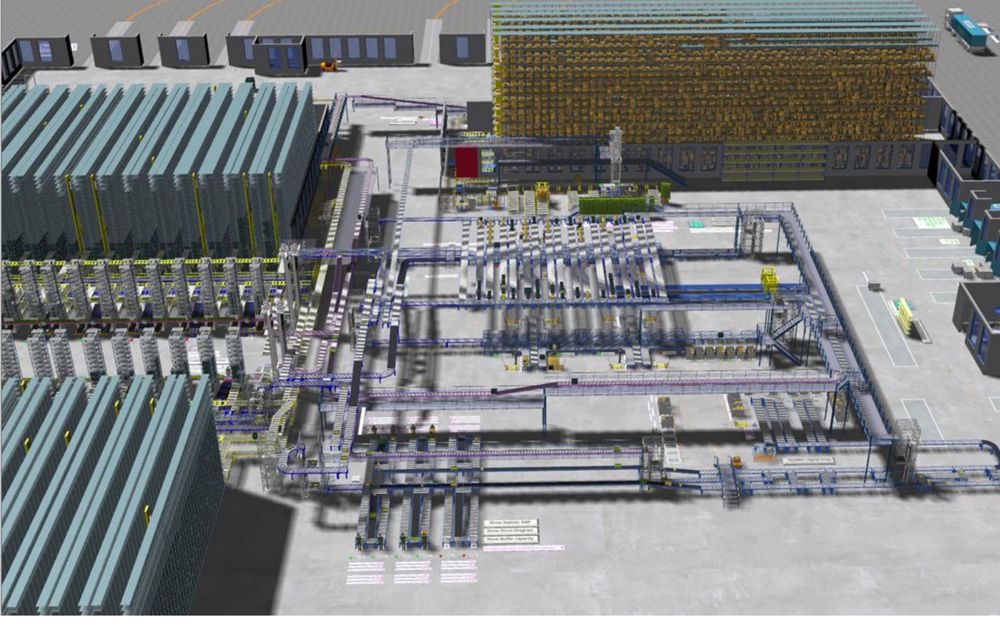

1. Plant Simulation คืออะไร
วัตถุประสงค์การเรียนรู้
- เข้าใจว่า Discrete Event Simulation (DES) คืออะไร และต่างจากการคำนวณด้วยมือแบบธรรมดาอย่างไร
- รู้ว่า Plant Simulation ใช้แก้ปัญหาแบบไหนได้บ้างในงานจริง
- เห็นภาพรวมว่าตลอดคอร์สนี้จะได้เรียนอะไรบ้าง
Discrete Event Simulation คืออะไร
Plant Simulation จำลองระบบแบบ Discrete Event Simulation (DES) — คือการจำลอง "เหตุการณ์" ที่เกิดขึ้นเป็นจุดๆ ตามเวลา (เช่น ชิ้นงานมาถึง, เครื่องเริ่มทำงาน, เครื่องทำงานเสร็จ) แทนที่จะคำนวณทุกวินาทีต่อเนื่อง ทำให้จำลองกระบวนการผลิตหลายวัน/หลายเดือนได้ในเวลาไม่กี่วินาทีบนคอมพิวเตอร์

- 1ผังพื้นโรงงาน (เส้นสีเทาจางด้านหลัง) — แบบ Layout จริงที่ใช้เป็นพื้นหลังอ้างอิงตำแหน่งวาง Object
- 2กลุ่มเครื่องจักรสีเขียว-ฟ้า — แต่ละกลุ่มแทนสถานีเครื่องจักร/ประมวลผลในสายการผลิตจริง
- 3เส้นทางสีส้ม — เส้นทางลำเลียงชิ้นงานที่เชื่อมแต่ละสถานีเข้าด้วยกัน
- 4พาเลทสีเขียวด้านล่าง — จุดพักสินค้าสำเร็จรูปก่อนส่งออกจากไลน์
Simulation กับ Digital Twin
Simulation (การจำลองสถานการณ์) คือการสร้างแบบจำลองของระบบหรือกระบวนการในโลกจริงขึ้นมา เพื่อศึกษาพฤติกรรม ทดสอบสมมติฐาน หรือคาดการณ์ผลลัพธ์ที่จะเกิดขึ้นภายใต้เงื่อนไขต่างๆ โดยไม่ต้องลงมือทำกับสถานการณ์จริง — เน้นออกแบบและทดสอบ "สิ่งที่อาจจะเกิดขึ้น" (What-if scenarios)
Digital Twin ต่อยอดจากแนวคิดนี้อีกขั้นหนึ่ง: เป็นแบบจำลองเสมือนจริงของวัตถุหรือกระบวนการที่ เชื่อมโยงกับข้อมูลจริง อย่างต่อเนื่อง ทำให้แสดงข้อมูลเชิงลึกของสิ่งที่เป็นอยู่ปัจจุบันแบบเรียลไทม์ (Real-time monitoring) และพยากรณ์เหตุการณ์ที่อาจจะเกิดขึ้น จากข้อมูลที่ได้รับ (Prediction) ได้ — พูดง่ายๆ คือโมเดล Plant Simulation ที่เริ่มสร้างในคอร์สนี้เป็นจุดตั้งต้น พอต่อเข้ากับข้อมูลจริงจาก หน้างานก็ต่อยอดกลายเป็น Digital Twin ได้ต่อไป

- 1ลดต้นทุน — ทดสอบและแก้ปัญหาในโลกดิจิทัลก่อนลงทุนจริง
- 2ทำนายล่วงหน้า — รู้ว่าอะไรจะเสียก่อนที่มันจะเสียจริง
- 3ตัดสินใจได้ดีขึ้น — มีข้อมูลเรียลไทม์ประกอบการวิเคราะห์
- 4ออกแบบได้แม่นยำ — จำลองสถานการณ์ได้ไม่จำกัดจำนวนครั้ง

ใช้ทำอะไรได้บ้าง
| โจทย์ | Plant Simulation ช่วยอะไร |
|---|---|
| ออกแบบสายการผลิตใหม่ | ทดสอบผัง Layout ก่อนลงทุนจริง ลดความเสี่ยงสร้างแล้วใช้ไม่ได้ |
| หาคอขวด (Bottleneck) | ดูว่าเครื่องไหนเป็นตัวถ่วง Throughput ของทั้งสาย |
| วางแผนกำลังการผลิต | ทดลองเพิ่ม/ลดจำนวนเครื่องจักรหรือคนงานแบบ what-if |
| บริหารสินค้าคงคลัง/โลจิสติกส์ | จำลองคลังสินค้า, AGV, ระบบขนส่งภายในโรงงาน |
ภาพรวมคอร์สนี้
คอร์สแบ่งเป็น 3 ระดับ: Basic รู้จักโปรแกรมและสร้างโมเดลแรก, Intermediate ทำให้โมเดลสมจริงขึ้นด้วย Object เพิ่มเติมและค่าสุ่ม, Advanced เขียนสคริปต์ SimTalk ควบคุมโมเดลและทำ Optimization อัตโนมัติ